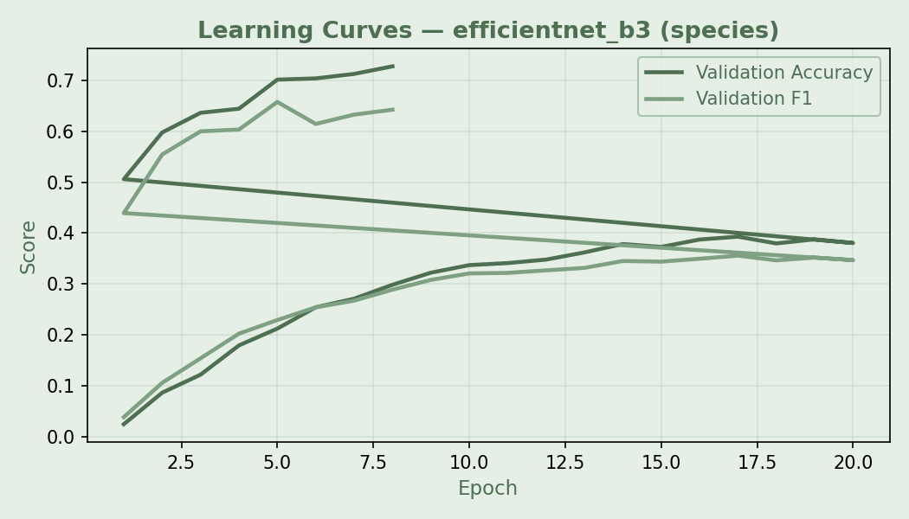
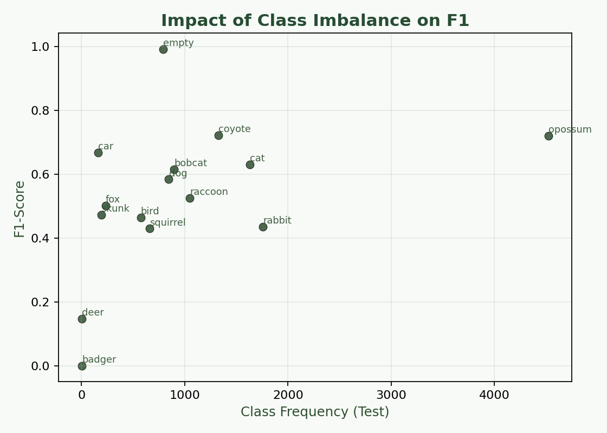
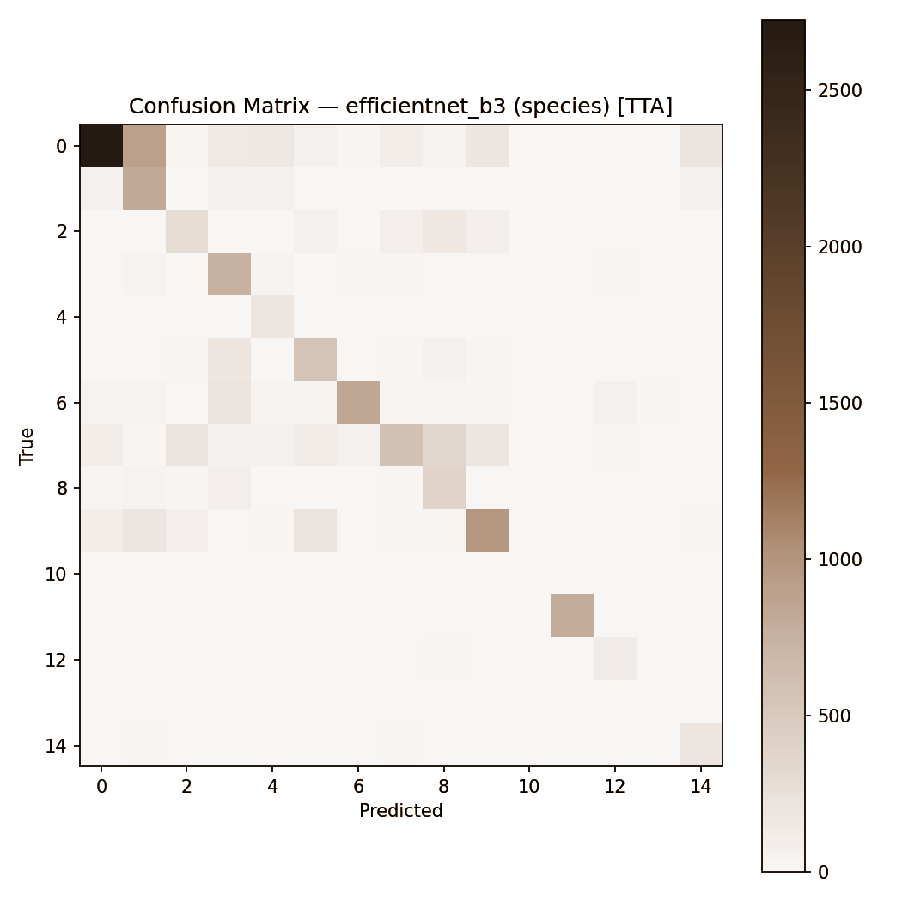
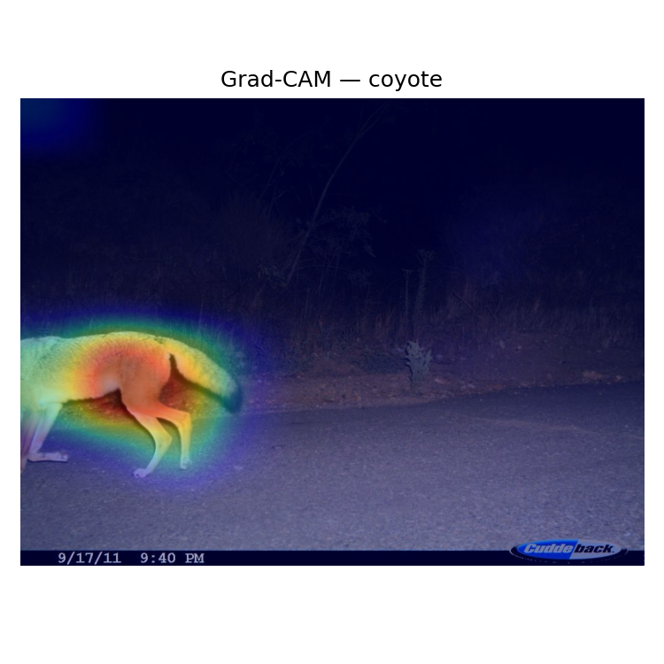
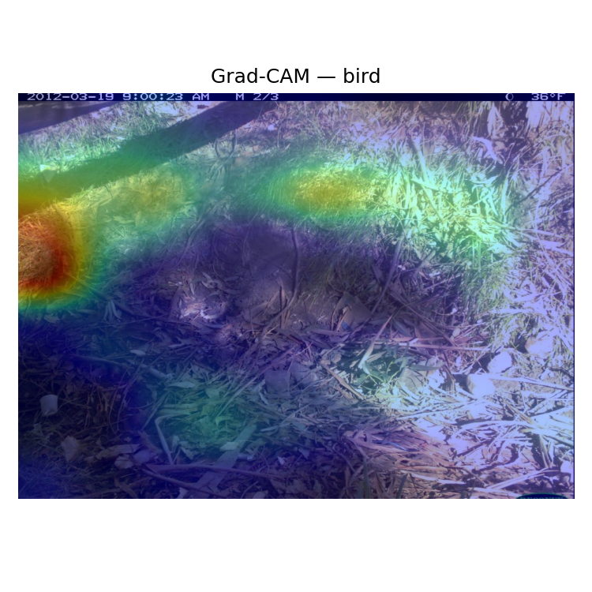
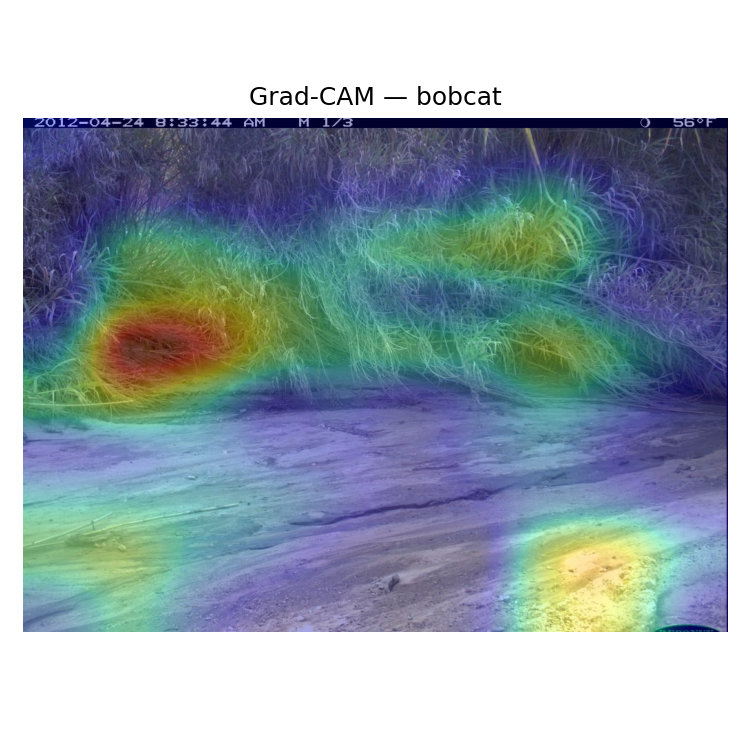
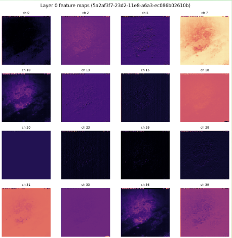
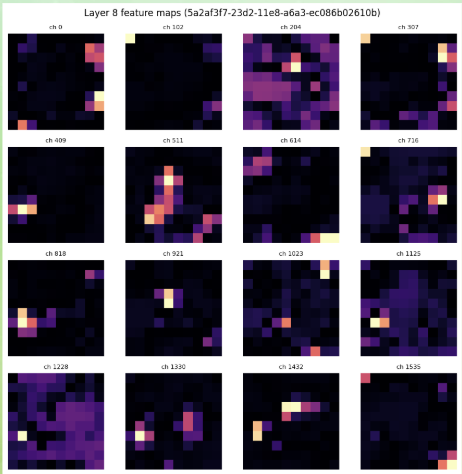

Trained EfficientNet-B3 with progressive fine-tuning on 243K camera trap images from 140 field locations to classify 15 wildlife species under severe real-world constraints: occlusion, motion blur, extreme class imbalance, and location-disjoint train/test splits.
Dataset
The CCT-20 subset contains images captured by motion-triggered camera traps deployed across 140 distinct geographic locations. Images are inherently challenging: partial occlusions, varying lighting conditions, motion blur, and empty frames are common. The dataset spans 15 classes with severe imbalance; some species appear thousands of times while others appear fewer than 10 times in the test set.
Architecture
EfficientNet-B3 was selected for its strong accuracy-to-parameter tradeoff on natural image benchmarks. Rather than fine-tuning the full network from the start, training proceeded in two stages: first training only the classification head with the backbone frozen, then unlocking all layers for full fine-tuning with a reduced learning rate. This prevents catastrophic forgetting of ImageNet features early in training.
Focal loss down-weighted easy negatives (the dominant "empty" and common-species frames) and forced the model to focus learning signal on rare, hard-to-classify species. Class-weighted cross-entropy was applied as a complementary strategy during the frozen-backbone phase.

Strategy
To efficiently use labeling budget, an active learning loop was integrated into training. After each round, the model scored unlabeled images using prediction entropy. Images where the model was most uncertain (highest entropy across class probabilities) were flagged for annotation first. This iterative approach improved performance on rare classes more efficiently than random sampling would allow.
Results
Overall accuracy: 62.2% · Weighted F-1: 0.632 · Macro F-1: 0.527 · Weighted Precision: 0.701
| Class | Precision | Recall | F1 | Support |
|---|---|---|---|---|
| Car | 0.990 | 0.994 | 0.992 | 2,268 |
| Coyote | 0.818 | 0.648 | 0.722 | 2,765 |
| Opossum | 0.894 | 0.603 | 0.720 | 4,524 |
| Bobcat | 0.700 | 0.547 | 0.615 | 1,182 |
| Cat | 0.675 | 0.591 | 0.631 | 4,047 |
| Dog | 0.627 | 0.548 | 0.584 | 697 |
| Raccoon | 0.648 | 0.440 | 0.525 | 3,199 |
| Skunk | 0.592 | 0.381 | 0.464 | 1,261 |
| Bird | 0.511 | 0.425 | 0.464 | 1,124 |
| Rabbit | 0.531 | 0.365 | 0.436 | 2,048 |
| Squirrel | 0.612 | 0.328 | 0.428 | 2,148 |
| Badger | 0.000 | 0.000 | 0.000 | 4 |


Interpretability
Gradient-weighted Class Activation Mapping (Grad-CAM) was applied to the final convolutional block to visualize which image regions most influenced each prediction. Heatmaps were generated for a sample of correctly and incorrectly classified images across all classes.
On high-confidence correct predictions (car, opossum, coyote), Grad-CAM consistently highlighted anatomically meaningful regions: vehicle body and wheels for cars, distinctive facial markings and fur texture for mammals. On misclassified examples, attention diffused to background vegetation or motion artifacts, revealing that the model was sometimes triggered by context rather than the animal itself.



Feature Maps
Activations from Layer 0 (early, texture/color edges) vs. Layer 8 (deep, sparse semantic features) illustrate how representations evolve through the network.


Findings & Limitations
The model generalizes well to unseen camera locations for high-support species, achieving F1 above 0.70 for car, coyote, and opossum. Performance degrades predictably with lower support and greater visual overlap with other classes.
Future work would benefit from a two-stage pipeline (detection → classification), incorporating temporal context across frames within a camera burst, and collecting more labeled examples for the rarest species through targeted field campaigns.